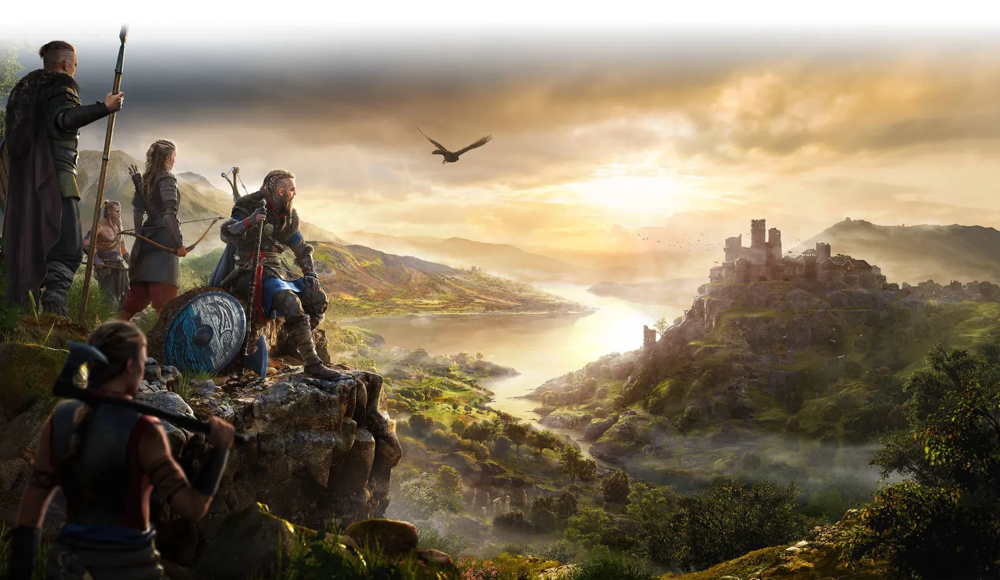
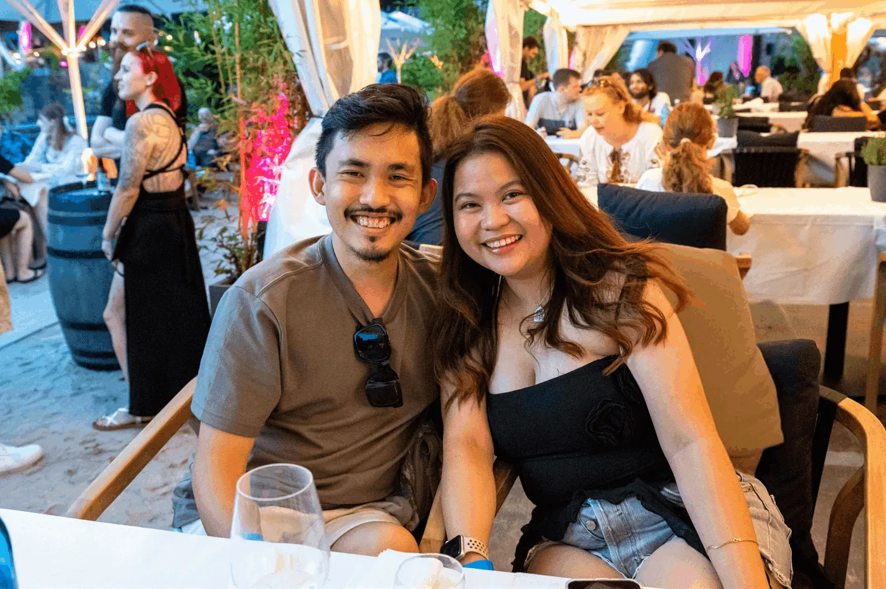
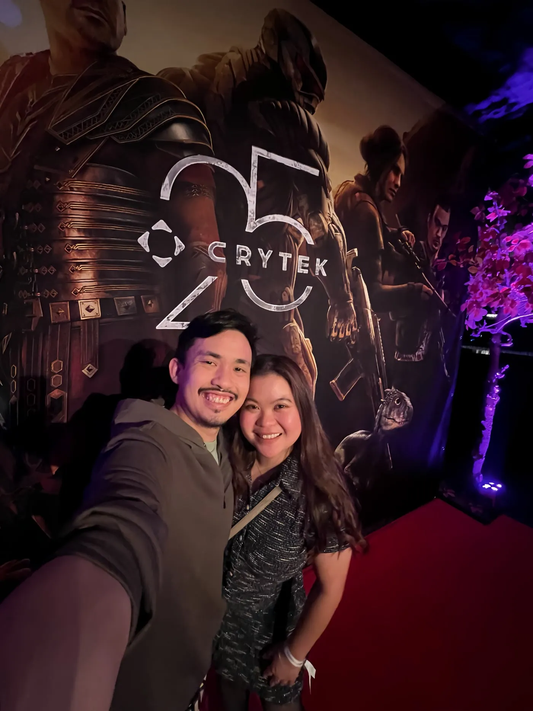
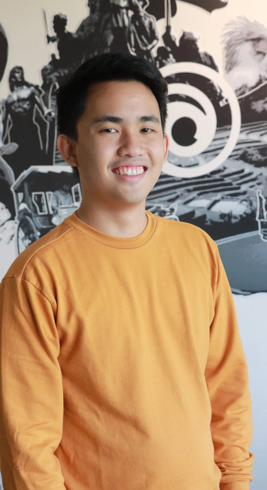

About me
Good thing you were able to pass by my site. I'll share more about myself below.

First things first
Ok, so before we go deeper about me, I would like to say that I'm a dog lover that's why I'm putting my pet dog named Chippy until I get some decent home page photo for my website.
Alright let's move on!
A little thing about me…
Hi I'm John Alson Entuna! People call me Alson because John is common haha! Anyways, I'm currently a Lead Technical Artist - Pipeline/Tools working for Crytek GmbH in their CryEngine Tools Department. I previously work for Ubisoft Philippines as a Technical Artist.
I went on AAA Game Development as soon as I finished my degree in Game Development. I worked with games such as Skull & Bones and Assassin's Creed Valhalla as a Technical Artist specializing in Tools and Pipeline. I love to deconstruct game engines and understand how they work so I could better improve the things that our team needs to be efficient and produce the best quality experiences for our players.
I'm a graduate of De La Salle - College of Saint Benilde who took up BS Information Technology with Specialization in Game Design and Development and a proud product of Saint Joseph School - La Salle Bacolod.
I love to make games especially when games have wonderful meanings that affect a person. I am a programmer and as well as a Technical Artist.
Not only do I love to code and do 3D things but also I love to play games. I'm a third-person kind of guy wherein I love to look at my character every time I play a game. Action and Story-based games are my favorites!
Right now, the experience I have with AAA Game Development, made me realize a whole new focus that I wanted to pursue in games; and that's Tools & Pipeline. I developed a love for creating tools and pipelines/workflows for the team because of the constant challenges and problems that come on a day-to-day basis in development. Tools also had a great impact on me because I have this sense of accomplishment whenever I see teams benefit from the things I developed to make them more efficient and speed up tasks.
My top 10 favorite games of all time
- It Takes Two & Split Fiction
- Hogwarts Legacy
- Ghost of Tsushima
- Assassin's Creed Syndicate
- Marvel's Spider-Man 2
- God of War / Ragnarök
- The Last of Us Part I
- Ryse: Son of Rome
- Call of Duty: Black Ops 6
- Hunt: Showdown 1896
My journey in game development
Developing games has been my dream since I was able to see my love for Programming and 3D Art.
I really love to code and do 3D art and even though people say that it's hard to do both, I really don't mind it. As long as I'm driven by my passion, there's no stopping me from doing what I love to do. Passion to learn and do stuff is the key to achieving something you will someday be proud of.
I spend most of the time learning new techniques that will further enhance my skills as a game developer and never stop learning.
Recently when I stepped in to my professional career, I later on found out my love and passion for Game Engines and their architecture. It's like something that I wanted to do every time I get my hands on another engine. I love to study how they work and built then I try to reconstruct them so I could make improvements or tools along the way because the more I understand how they're built the more I know how to improve and tackle issues that comes with the production.
Where I've worked
-
Lead Technical Artist: Tools
Currently leading the TechArt:Tools department of the CRYENGINE team in different various aspects of development; from DCC Pipeline Tooling, Engine & Editor Plugins (CryEngine), to Localization and Performance Tooling. We develop tooling to help different teams in all projects.
-
Acting Lead Technical Artist
I transitioned to a leadership role to lead a team of Technical Artists of different expertise. Working together with different engine departments and reporting to Crytek's CTO for ensuring the team is aligned with the company's technical vision for next generation of tooling.
-
Senior Technical Artist — Tools & Pipeline (CRYENGINE)
Took on another challenge as a Senior Technical Artist for Pipeline/Tools and currently is helping out with Crytek's Pipeline Team for all projects of the company.
Currently in the CRYENGINE team working on tools and plugins for the Game Teams. Some tools and engine plugins I've developed over the years are: Level Art & Design Tools, Asset Tools, Texture Editor, Asset Management, Screenshot Tooling, LOD Generators, etc...
Projects: CRYENGINE, Hunt: Showdown 1896


-
Technical Artist
So I joined Ubisoft Philippines back in 2017 as a Junior Programmer then later on transitioned to a Technical Artist along the way because of my love for 3D in real-time rendering and developing tools.
All throughout my experience here in Ubisoft I learned a lot of things. From producing pipelines and workflows for AAA Assets to making tools for DCC and our very own engine, doing a lot of debugging and bug fixing for our engine. Improving existing systems to meet with the new innovations of the current production.
Oh hey, I also got to learn a lot of these deep optimization techniques for consoles that I never had a chance before during my university days. I learned a lot from my mentors from different studios in Singapore, Montreal, Quebec, Sofia, Newcastle, Leamington, Belgrade, Barcelona, Chengdu, and etc.
Probably so far, the greatest achievement that I have is to work with Assassin's Creed Valhalla handling different aspects of the game, and not only that, I managed to handle one chunk of the game which was the Weapons Pipeline where we made everything from concept down to the weapon which Eivor was using. Not only this but I was lucky enough to manage pipelines for objects and locations.
So my story still continues and currently I own a big feature coming up on an Unannounced Project; building this feature from the ground up. It's a pretty big leap from what I was doing in the past projects... Stay tuned for more details really soon...
While you are here, feel free to check out some of the AAA games I was able to work on.

More about myself
To save up some space here in this page, I'll link more information about me in my old website blog. It's a little bit of an introduction about myself that I wrote a few years back on my blog.